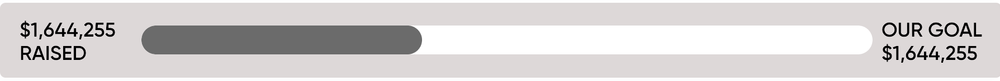

Everybody needs a home - a place where you can truly be yourself, and feel safe and loved. Every year, Sydney Dogs and Cats Home helps reunite or find new homes for over 3,000 lost and abandoned pets from across Sydney. But before that, we share our Home with them. We’ve grown out of our current one though - so we need your help to raise $6.4 million to complete the build of our new Home in Kurnell.
When the time comes, we will be laying a path that will show the journey we have taken to build our future.
We will recognise your support by dedicating pavers to you and your four-legged friend!